Chao Zhang1,2 和 Anmin Duan1
Chao Zhang1,2 & Anmin Duan1
1厦门大学海洋与地球学院，近海海洋环境科学国家重点实验室，海洋气象与气候变化研究中心，中国厦门
1Center for Marine Meteorology and Climate Change, State Key Laboratory of Marine Environmental Science, College of Ocean and Earth Sciences, Xiamen University, Xiamen, China.
2德国基尔亥姆霍兹海洋研究中心（GEOMAR），海洋生物地球化学部，德国基尔
2Marine Biogeochemistry Division, GEOMAR Helmholtz Centre for Ocean Research Kiel, Kiel, Germany.
电子邮箱：chaozhang@xmu.edu.cn；amduan@xmu.edu.cn
e-mail: chaozhang@xmu.edu.cn; amduan@xmu.edu.cn
npj Climate and Atmospheric Science | (2026) 9:26
npj Climate and Atmospheric Science | (2026) 9:26
冬季印缅槽（IBT）的变化与孟加拉湾上空的局地气旋性异常相关，并受中纬度遥相关的调制。
Variations in the winter India-Burma trough (IBT) are associated with local cyclonic anomalies over the Bay of Bengal and modulated by mid-latitude teleconnections.
然而，尽管槽底降水远多于冬季，春季 IBT 的变率仍然认识不足（原文作“poorly understand”）。
However, spring IBT variability remains poorly understand, despite trough-base precipitation being substantially greater than in winter.
本文发现，春季 IBT 与青藏高原积雪（TPS）的关系在 2000 年前后发生了反转。
Here, we identify a reversal in the spring IBT-Tibetan Plateau snow cover (TPS) relationship around the year 2000.
这一转变表现为：2000 年以前槽底东移，此后槽底回撤至孟加拉湾。
This shift corresponds to eastward displacement of the trough-base before 2000, followed by a retreat toward the Bay of Bengal.
积雪扰动试验和湿位涡诊断表明，在 1979–1999 年，高原积雪偏多会增强槽前的大气扰动、减弱槽底附近的大气扰动。
Snow-perturbation experiments and moist potential vorticity diagnostics show that during 1979–1999, high TPS enhances atmospheric disturbances ahead of the trough and weakens them near its base.
这一过程因此触发了 IBT 的东移。
This process hence triggers an eastward displacement of the IBT.
在 2000–2020 年，高原积雪偏多则产生大体相反的效应。
During 2000–2020, high TPS exerts largely opposite effects.
此外，太平洋年代际振荡（PDO）调制了这一 IBT–TPS 关系的反转。
Furthermore, the Pacific Decadal Oscillation (PDO) modulates this IBT-TPS linkage reversal.
在未来几十年，预计 PDO 将转为正位相，从而促进 IBT 东移，使东亚春季降水增多，同时使中南半岛的干旱风险上升。
In the coming decades, a projected shift to a positive PDO phase is expected to promote IBT eastward displacement, enhancing spring precipitation in East Asia while increasing drought risk over the Indochina Peninsula.
因此，我们的结果为改进季节预测和评估亚洲季风区的气候风险提供了依据。
Our results hence provide a basis for improving seasonal projections and assessing climate risks across monsoon Asia.
在青藏高原的阻挡作用下，副热带西风分为两支，其南支形成印缅（现缅甸）槽（IBT）——一个位于孟加拉湾上空的半永久性低压槽，通常在冬、春季出现1–3。
Under the blocking effect of the Tibetan Plateau, the subtropical westerly splits into two branches; its southern branch forms the India-Burma (now Myanmar) trough (IBT), a semi-permanent low-pressure trough over the Bay of Bengal that typically emerges during boreal winter and spring1–3.
从气候态来看，春季全球热带和副热带地区最显著的特征是由四个显著的槽组成的系统（补充图 1a）。
Climatologically, the dominant feature of the global tropics and subtropics in spring is a system of four prominent troughs (Supplementary Fig. 1a).
其中，春季 IBT 以槽底最深、位置最偏南为特征。
Among them, the spring IBT is characterized by the deepest base and southernmost position.
与之相伴的降水从东亚一直延伸到整个北太平洋，是全球各槽系统中降水覆盖范围最广的。
The associated precipitation extends from East Asia across the entire North Pacific, representing the most extensive rainfall coverage of any global trough system.
IBT 的强度与位置变化对亚洲大陆和西太平洋的气候异常具有深远影响，可影响热带气旋4、大范围降水2,5、干旱6,7和持续低温过程8,9。
The intensity and positional shifts of the IBT exert a profound influence on climate anomalies over the Asian continent and western Pacific, impacting tropical cyclones4, large-scale precipitation2,5, droughts6,7, and persistent cold spells8,9.
具体而言，3–4 月 IBT 的强度是西北太平洋和南海热带气旋季节预测的一个可靠指标4。
Specifically, the March-April IBT intensity serves as a reliable indicator for seasonal forecasting of tropical cyclones in the Western North Pacific and South China Sea4.
偏强的 IBT 与东亚东部气温和降水偏多、而印度气温和降水偏少相关5。
A stronger IBT is correlated with above-normal temperature and precipitation in eastern East Asia but below-normal temperature and precipitation in India5.
另一方面，偏弱的 IBT 不利于云南（中国的一个省份）降水，是 2009–2010 年该地区极端干旱的一个主要因素6。
A weak IBT, on the other hand, is unfavorable for rainfall in Yunan (a province in China) and is a major factor behind the region's extreme drought in 2009–20106.
IBT 在天气、年际和年代际时间尺度上均表现出显著的变率1,2,10。
The IBT exhibits significant variability across synoptic, interannual, and interdecadal timescales1,2,10.
孟加拉湾上空的气旋性环流异常通过调控其涡度强度来调制 IBT 的波动。
The cyclonic circulation anomaly over the Bay of Bengal modulates IBT fluctuations by controlling its vorticity intensity.
在天气尺度上，冬季南亚急流波列在 4–6 天内传播至东亚11–13，从而调制这一气旋异常13–15。
On synoptic timescales, the South Asian jet wave train propagates to East Asia within 4–6 days during winter11–13, modulating this cyclone anomaly13–15.
在年际尺度上，冬季 IBT 的加深通过西风急流的波动性和热带开尔文波与拉尼娜事件相联系2,16,17，这一联系自 2000 年以来可能因太平洋年代际振荡（PDO）负位相而在年代际尺度上增强17。
On interannual timescales, the deepening of the winter IBT is linked to La Niña via westerly jet waviness and tropical Kelvin waves2,16,17, a linkage may strengthen interdecadally by a negative Pacific Decadal Oscillation (PDO) phase since 200017.
从陆面来看，青藏高原土壤温度偏低会通过影响高层西风而加强冬季 IBT18,19。
From the land surface, decreased Tibetan Plateau soil temperature strengthens the winter IBT by affecting upper-level westerlies18,19.
重要的是，加强的冬季 IBT 对应着孟加拉湾上空的异常气旋。
Importantly, a strengthened winter IBT corresponds to an anomalous cyclone over the Bay of Bengal.
其东侧的偏南风有利于东亚和东南亚的降水，而西侧的偏北风则抑制南亚的降水，从而建立了 IBT 与亚洲降水之间的直接联系2,5。
The southerlies on its eastern flank promote rainfall in East and Southeast Asia, whereas northerlies on its western flank suppress it in South Asia, thereby establishing a direct link between IBT and Asian precipitation2,5.
由于季节转换期间西风与季风相互作用复杂20,21，加之厄尔尼诺-南方涛动（ENSO）存在春季可预报性障碍22–24，春季 IBT 受到的关注少于其冬季对应物；这些因素共同给分离和预测其动力学带来了挑战。
The spring IBT has received less attention than its winter counterpart, owing to the complex westerly-monsoon interaction during the seasonal transition20,21, as well as the spring predictability barrier of El Niño-Southern Oscillation (ENSO)22–24, which together present a challenge for isolating and predicting its dynamics.
值得注意的是，与冬季相比，气候态春季 IBT 的槽底降水增加约 8 倍、下游强度增强 1–2 倍（补充图 1d），这归因于槽底更深、下游倾斜更陡，以及其西太平洋部分北移 5–7°（补充图 1b、c）。
Notably, the climatological spring IBT exhibits an ~8-fold increase in trough base precipitation and a 1–2-fold downstream strengthening compared to winter (Supplementary Fig. 1d), which is attributed to a deeper trough base and a sharper downstream tilting, and a 5–7° northward shift over the western Pacific (Supplementary Fig. 1b, c).
这些独特特征凸显了研究春季 IBT 变率机制的迫切性。
These distinctive features underscore the need to investigate the mechanisms governing spring IBT variability.
本文以 TPS 作为物理驱动因子，研究春季 IBT 与青藏高原热力强迫之间的关系。
Here, we examine the relationship between spring IBT and Tibetan Plateau thermal forcing, using TPS as the physical driver.
这一选择基于三个主要考虑：(1) 春季 TPS 偶极型分布——以西部积雪减少、东部积雪增多为特征——有利于在孟加拉湾上空形成异常气旋性环流25。
This is motivated by three main considerations: (1) A spring TPS dipole pattern, characterized by reduced snow in the west and increased snow in the east, favors the formation of an anomalous cyclonic circulation over the Bay of Bengal25.
由于该系统是 IBT 的关键调节因子，这种 TPS 分布型可能与 IBT 变率建立联系。
Since this system is a key regulator of IBT, such a TPS pattern may establish a linkage with IBT variability.
(2) 春季 ENSO 可预报性障碍限制了该季节的预报技巧22–24；然而，持续的 TPS 异常提供了宝贵的可预报性来源26–29，有助于克服这一障碍。
(2) The spring ENSO predictability barrier limits the forecast skill during this season22–24; however, persistent TPS anomalies provide a valuable source of predictability26–29 that helps overcome this barrier.
(3) 此外，春季 TPS 对高原及其周边地区产生持续的热力影响，从而通过改变高原热力和水文强迫的强度来影响随后的亚洲季风21,30。
(3) Moreover, spring TPS exerts a prolonged thermal influence on the Plateau and its surroundings, and hence alters the subsequent Asian monsoon by alternating the intensity of the Plateau's thermal and hydrological forcings21,30.
我们的观测分析揭示了 TPS–IBT 联系在 2000 年前后的年代际转型（regime shift）。
Our observational analysis reveals a regime shift in the TPS-IBT linkage around 2000.
通过有针对性的数值试验和理论诊断，本研究旨在量化 TPS 异常如何影响春季 IBT 的位置和强度，以及这一联系自 2000 年以来如何变化。
Through targeted numerical experiments and theoretical diagnostics, this study aims to quantify how TPS anomalies influence the position and strength of the spring IBT, and how this linkage has changed since 2000.
我们的工作旨在为改进季风季节预测和区域气候适应策略作出贡献。
Our work seeks to contribute to advance in seasonal monsoon projection and regional climate adaptation strategies.
在极端低积雪年份 1996 年（−1.5σ），IBT 下游区域出现了正的降水异常；而在高积雪年份 2011 年（+1.5σ），下游则出现负的降水异常（补充图 2）。
During the extreme low-TPS year of 1996 (−1.5σ), positive precipitation anomalies emerged in the IBT downstream sector, whereas during the high-TPS year of 2011 (+1.5σ), negative precipitation anomalies occurred downstream (Supplementary Fig. 2).
这些相反的响应促使我们研究 TPS–IBT 联系。
These contrasting responses motivate us to investigate the TPS-IBT linkage.
参照以往基于 700 hPa 涡度10,13或位势高度18的 IBT 定义，我们计算了基于涡度和基于高度的两种春季 IBT 指数（见“方法”），并考察了它们与 TPS 指数的 19 年和 21 年滑动相关（图 1a；基于高度的 IBT 指数乘以 −1）。
Following previous definitions of the IBT based on 700 hPa vorticity10,13 or geopotential height18, we calculate both vorticity-based and height-based spring IBT indices (see “Methods”), and examine their 19-year and 21-year sliding correlations with the TPS index (Fig. 1a; the height-based IBT index × (−1)).
结果表明，1979–1999 年两者呈显著（p < 0.05）负相关。
The results show significant (p < 0.05) negative correlations from 1979 to 1999.
然而，到 2010 年，这种滑动相关转变为显著（p < 0.1）的正值（以 2010 年为中心，即覆盖 2000–2020 年），表明 2000–2020 年处于相反的模态。
However, by 2010, such sliding correlations shift to significant (p < 0.1) positive values (centered on 2010, i.e., spanning 2000–2020), indicating an opposite regime during 2000–2020.
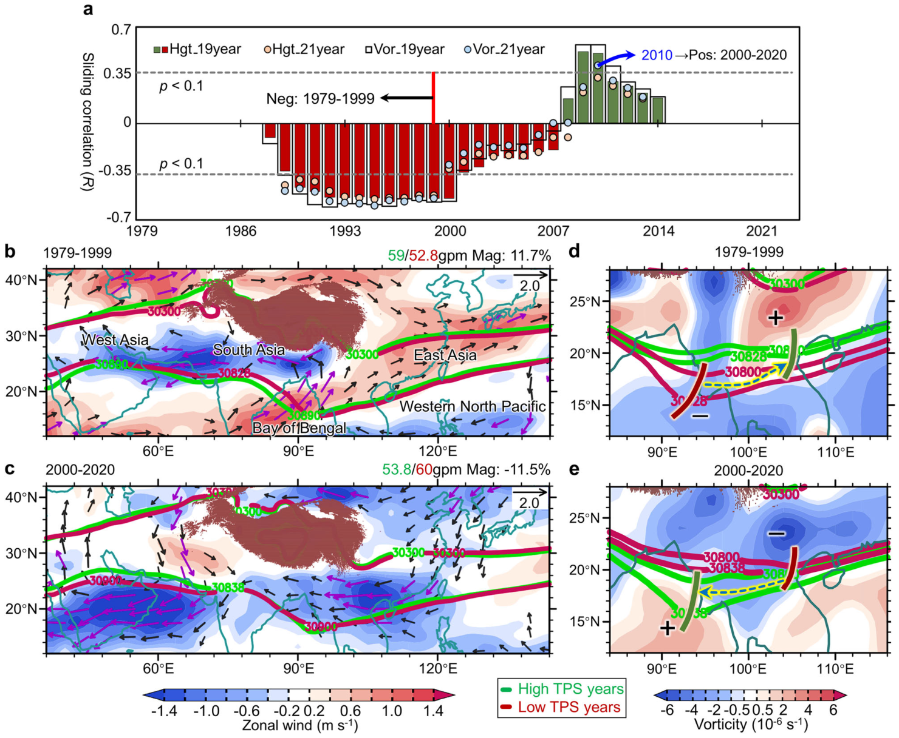
图 1 | TPS–IBT 年际联系的年代际转型。
Fig. 1 | Regime shift in TPS-IBT interannual linkage.
a 1979–2023 年春季（3–4–5 月）青藏高原积雪（TPS）与印缅槽（IBT）指数之间的滑动相关（19 年/21 年窗口）。
a Sliding correlation (19-/21-year window) between the spring (March-April-May) Tibetan Plateau snow cover (TPS) and the India-Burma trough (IBT) indices during 1979-2023.
IBT 指数由 700 hPa 位势高度（乘以 −1）和涡度场得到。
IBT indices derived from 700 hPa geopotential height (multiplied by -1) and vorticity fields.
水平虚线：90% 显著性阈值。
Horizontal dashed lines: 90% significance thresholds.
b 1979–1999 年 700 hPa 春季风场（矢量）和纬向风（填色）异常，由高、低 TPS 年份之差得到。
b Spring wind (vector) and zonal wind (shading) anomalies at 700 hPa during 1979–1999, obtained by differences between high and low TPS years.
绿色等值线（10⁻¹ gpm）：高 TPS 年份的 700 hPa 位势高度（梯度 = 59 gpm）。
Green contours (10−1 gpm): 700 hPa geopotential height for high-TPS years (gradient = 59 gpm).
红色等值线：低 TPS 年份的情形（梯度 = 52.8 gpm）。
Red contours: Low TPS year conditions (gradient = 52.8 gpm).
高 TPS 年份的高度梯度大 11.7%。
Height gradient is 11.7% larger during high TPS years.
c 同 (b)，但为 2000–2020 年。
c As in (b), but for 2000–2020.
高度梯度：高 TPS = 53.8 gpm，低 TPS = 60 gpm；高 TPS 年份小 11.5%。
Height gradients: high-TPS = 53.8 gpm, low-TPS = 60 gpm; 11.5% smaller during high-TPS years.
d、e 同 (b、c)，但显示 IBT 位移和 850 hPa 涡度（填色）。
d, e As in (b, c) but showing IBT displacement and 850 hPa vorticity (shading).
数据来源：NOAA 卫星积雪和 ERA5 环流场。
Data sources: NOAA satellite snow cover and ERA5 circulation fields.
在空间上，1979–1999 年的高 TPS 年份对应槽底负涡度异常（图 1d），与 2000–2020 年槽底的正异常（图 1e）形成对比。
Spatially, high-TPS years during 1979–1999 correspond to negative vorticity anomalies at the trough base (Fig. 1d), contrasting with the positive anomalies in 2000–2020 (Fig. 1e).
这一反转标志着 TPS–IBT 相关由负转正。
This reversal marks a shift from negative to positive TPS-IBT correlation.
与此同时，1979–1999 年的高 TPS 年份位势高度场偏高、高度梯度比低 TPS 年份强 11.7%（图 1b 和补充图 3），而 2000–2020 年情况相反，表现为高度场偏低、梯度弱 11.5%（图 1c）。
Concurrently, high-TPS years in 1979-1999 exhibit elevated geopotential height and 11.7% stronger height gradients than low-TPS years (Fig. 1b and Supplementary Fig. 3), opposing conditions in 2000–2020, which show reduced height field and 11.5% weaker gradients (Fig. 1c).
1979–1999 年增强的气压梯度加速下游西风，而 2000 年以后减弱的梯度则抑制西风（图 1b、c）。
The strengthened pressure gradients during 1979-1999 accelerate downstream westerlies, whereas weakened gradients post-2000 suppress them (Fig. 1b, c).
这些系统性反转证实了 TPS–IBT 关系发生了年代际转型。
These systematic reversals validate a regime shift in the TPS-IBT relationship.
作为一种半永久性低压系统，IBT 槽底的变化可能触发下游响应15。
As a semi-permanent low-pressure system, IBT trough base changes potentially trigger downstream responses15.
在 1979–1999 年，高 TPS 年份与槽底负涡度异常和下游正涡度异常相伴，促使槽底东移约 12 个经度（12 × 111 km × cos(17.5°) ≈ 1270 km；图 1d）。
During 1979–1999, high-TPS years are associated with negative vorticity anomalies at the trough base alongside positive downstream anomalies, favoring an eastward displacement of the trough base by ~12 longitude (12 × 111 km × cos(17.5°) ≈1270 km; Fig. 1d).
相反，在 2000–2020 年，高 TPS 年份对应槽底正涡度异常和下游负异常，表明槽在孟加拉湾上空加强（图 1e）。
Conversely, in 2000–2020, high-TPS years correspond to positive vorticity anomalies at trough base but negative anomalies downstream, indicating a strengthening of the trough over the Bay of Bengal (Fig. 1e).
作为“亚洲水塔”31–33，青藏高原积雪通过反照率反馈21,26,34,35和水文效应20,36,37驱动区域乃至全球气候异常。
As the “Asian Water Tower”31–33, the Tibetan Plateau snow drives regional and global climate anomalies via albedo feedback21,26,34,35 and hydrological effects20,36,37.
在 1979–1999 年，TPS 指数正位相对应一种准跷跷板型积雪分布，即高原中东部的正积雪异常与西部的负积雪异常相对（补充图 4a）。
During 1979–1999, a positive-phase TPS index corresponds to a quasi-seesaw snow pattern, which is defined as positive snow anomalies over the central-eastern Tibet versus negative anomalies in the west (Supplementary Fig. 4a).
由于积雪反照率效应，这种空间分布型在中东部地区引起从地表到中高层大气的冷却异常（−0.9 至 −0.1 K），与西部的增暖异常（0.2–0.6 K；补充图 4c）形成对比。
Due to snow-albedo effect, this spatial pattern induces surface to mid-upper atmospheric cooling anomalies (−0.9 to −0.1 K) over the central-eastern regions, contrasting with western warming anomalies (0.2–0.6 K; Supplementary Fig. 4c).
相反，在 2000–2020 年，TPS 指数正位相呈现一种一致型积雪分布，即整个高原普遍出现正积雪异常（补充图 4b），从而从地表到中高层大气产生一致的冷却异常（−1.1 至 −0.2 K；补充图 4d）。
Conversely, during 2000–2020, a positive-phase TPS index exhibits a coherent snow pattern, which is defined as widespread positive snow anomalies across the entire Plateau (Supplementary Fig. 4b), driving consistent cooling anomalies from surface through mid-upper atmosphere (−1.1 to −0.2 K; Supplementary Fig. 4d).
鉴于积雪与大气环流之间的相互作用38–43，我们开展了四组积雪扰动试验，以诊断大气环流对不同 TPS 强迫的响应（见“方法”）。
Given the interaction between snowpack and atmospheric circulation38–43, we conduct four sets of snow-perturbation experiments to diagnose circulation responses to different TPS forcings (see “Methods”).
在 1979–1999 年，观测和试验均表明，准跷跷板型 TPS 分布驱动青藏高原以东的对流层上层气旋异常和高原以西的反气旋异常（图 2a 和补充图 5a）。
During 1979-1999, observations and experiments reveal that the quasi-seesaw TPS pattern drives an upper-tropospheric cyclonic anomaly east of the Tibet and an anticyclone anomaly west of the Tibet (Fig. 2a and Supplementary Fig. 5a).
这是因为中东部积雪增强引起绝热冷却，而西部积雪减少则促进绝热加热（补充图 4c）。
This occurs as the enhanced central-eastern snowpack induces adiabatic cooling, whereas the western reduced snow cover promotes adiabatic heating (Supplementary Fig. 4c).
相比之下，在 2000–2020 年，一致型 TPS 分布通过均匀的绝热冷却在青藏高原上空产生宽广的对流层上层气旋异常（图 2b）（补充图 4d）。
In contrast, during 2000-2020, the coherent TPS pattern generates a broad upper-tropospheric cyclone anomaly across the Tibet (Fig. 2b) via a uniform adiabatic cooling (Supplementary Fig. 4d).
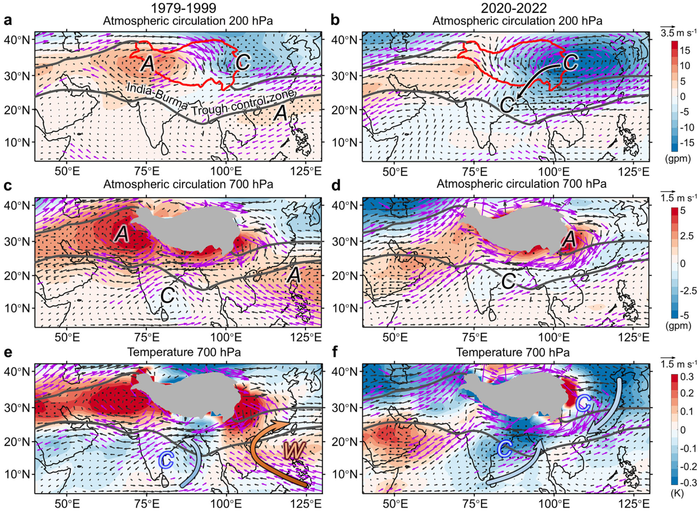
图 2 | TPS 强迫对 IBT 变化影响的模拟结果。
Fig. 2 | Modeled impacts of TPS forcing on IBT variations.
a 对准跷跷板型 TPS 强迫（1979–1999 年）的响应：春季 200 hPa 位势高度（填色）和风场（矢量），以集合平均之差（PosSSExp – NegSSExp）表示。
a Spring geopotential height (shading) and wind (vector) at 200 hPa in responses to quasi-seesaw TPS forcing (1979–1999), displayed as the ensemble mean differences (PosSSExp – NegSSExp).
b 同 (a)，但为一致型 TPS 强迫（2000–2020 年；PosCHRExp – NegCHRExp）。
b As in (a), but for coherent TPS forcing (2000–2020; PosCHRExp – NegCHRExp).
c–f 同 (a、b)，但显示 700 hPa 环流和温度响应。
c–f As in (a, b), but depicting 700 hPa circulation and temperature responses.
所有积雪扰动试验均使用 CESM-LEN 完成（见“方法”）。
All snow perturbation experiments were conducted using the CESM-LEN (see “Methods”).
黑色“A”/“C”：反气旋/气旋环流。
Black “A”/“C”: Anticyclonic/cyclonic circulation.
蓝色“C”和红色“W”：冷/暖平流。
Blue “C” and red “W”: cold/warm advection.
黑点和紫色矢量表示通过 95% 显著性检验的区域（双侧 t 检验）。
Black dots and purple vectors indicate regions with statistical significance at the 95% level (two-sided t-test).
黑色等值线：IBT 控制区（700 hPa 位势高度气候态：3030/3081.5 gpm）。
Black contours: IBT control zone (700 hPa geopotential height climatology: 3030/3081.5 gpm).
观测对应的结果见补充图 5。
Observational counterparts are presented in Supplementary Fig. 5.
在 1979–1999 年，正的准跷跷板型 TPS 分布沿青藏高原南部触发对流层低层的反气旋—气旋—反气旋环流异常（图 2c）。
During 1979–1999, the positive quasi-seesaw TPS pattern triggers a lower tropospheric anticyclone-cyclone-anticyclone circulation anomaly along the southern Tibet (Fig. 2c).
西太平洋反气旋异常西北侧的西南风异常（图 2e）增强气候态西南风（补充图 1b），加速背景气流，从而促进槽前发展。
Southwesterly anomalies along the northwestern flank of the western Pacific anticyclonic anomaly (Fig. 2e) enhance climatological southwesterlies (Supplementary Fig. 1b), accelerating background flow and hence promoting trough-ahead development.
此外，这些西南风异常还将暖平流输送至槽前（补充图 6a），通过空气质量补偿引起空气膨胀和对流层低层辐合运动。
In addition, these southwesterly anomalies also transport warm advection ahead of the trough (Supplementary Fig. 6a), causing air expansion and lower-tropospheric convergence motions via air mass compensation.
由于低层辐合有利于位涡制造44,45，槽前发展出正涡度异常（图 1d）。
As low-level convergence facilitates potential vorticity generation44,45, positive vorticity anomalies develop ahead of the trough (Fig. 1d).
与此同时，槽底呈现偏南风和冷异常（图 2e）。
Concurrently, the trough base features southerly and cold anomalies (Fig. 2e).
冷平流（补充图 6a）驱动辐散运动，通过位涡耗散削弱槽底。
Cold advection (Supplementary Fig. 6a) drives divergent motions, weakening the trough base through potential vorticity dissipation.
综合来看，槽前发展、槽底减弱以及 104°E 冷/暖平流边界（补充图 6a）共同驱动槽底东移约 12°（图 1d）。
Collectively, trough-ahead development, base weakening, and the 104°E cold/warm advection boundary (Supplementary Fig. 6a) drive an ~12° eastward displacement of trough base (Fig. 1d).
在 2000–2020 年，正的一致型 TPS 分布触发青藏高原以南的对流层低层气旋异常及其东侧的反气旋异常（图 2b）。
During 2000-2020, the positive coherent TPS pattern triggers a lower-tropospheric cyclonic anomaly south of the Tibet alongside an eastern anticyclonic anomaly (Fig. 2b).
沿该反气旋的东北风异常与气候态西南风相反，削弱了槽前气流。
Northeasterly anomalies along this anticyclone opposite climatological southwesterlies, weakening airflow ahead of the trough.
这些东北风异常还在槽前驱动冷平流（图 2f 和补充图 6b）。
These northeasterly anomalies also drive cold advection ahead of the trough (Fig. 2f and Supplementary Fig. 6b).
这一过程导致位涡耗散，从而削弱槽前强度。
This process leads to potential vorticity dissipation, which reduces trough-ahead intensity.
同时，气旋异常（图 2d）通过位涡制造加强槽底，使 IBT 在孟加拉湾上空加深。
Simultaneously, the cyclonic anomaly (Fig. 2d) strengthens the trough base through potential vorticity generation, deepening the IBT over the Bay of Bengal.
基于 IBT 变化与 TPS 强迫之间的物理联系，我们采用湿位涡（MPV）框架（见“方法”）来量化其内在机制46–48。
Based on the physical linkages between IBT variations and TPS forcing, we employ a moist potential vorticity (MPV) framework (see “Methods”) to quantify the underlying mechanisms46–48.
MPV 分解为垂直分量（MPV1）和水平分量（MPV2），其中 MPV1 < 0 诊断对流不稳定，而 MPV1 > 0 表示稳定；MPV2 > 0 表示暖平流，而 MPV2 < 0 表示冷平流。
MPV is decomposed into its vertical component (MPV1) and horizontal component (MPV2), where MPV1 < 0 diagnoses convective instability, while MPV1 > 0 indicates stability; MPV2 > 0 signifies warm advection, while MPV2 < 0 denotes cold advection.
在 1979–1999 年，正的准跷跷板型 TPS 分布促进槽前暖平流（MPV2 = (1.1 ± 0.3) × 10⁻² PVU；图 3b 和补充图 7），并伴随对流不稳定（MPV1 = (−3.1 ± 0.7) × 10⁻² PVU；图 3b）和正降水异常（补充图 6c）。
During 1979-1999, the positive quasi-seesaw TPS pattern promotes warm advection ahead of the trough (MPV2 = (1.1 ± 0.3) × 10⁻² PVU; Fig. 3b and Supplementary Fig. 7), accompanied by convective instability (MPV1 = (−3.1 ± 0.7) × 10⁻² PVU; Fig. 3b) and positive precipitation anomalies (Supplementary Fig. 6c).
与降水相伴的潜热在中层（600–400 hPa）释放，与低层之间形成垂直热力对比，从而制造位涡44,45,49，进而增强槽前的正涡度异常（图 1d）。
The precipitation associated latent heat release from mid-level (600–400 hPa) creates a vertical thermal contrast with lower levels that generates potential vorticity44,45,49, thereby enhancing positive vorticity anomalies ahead of the trough (Fig. 1d).
相反，槽底以冷平流为主（MPV2 = (−0.7 ± 0.3) × 10⁻² PVU；图 3a），稳定性增强（MPV1 = (0.1 ± 0.2) × 10⁻² PVU；图 3a）且降水受抑制（补充图 6c），导致位涡耗散。
Conversely, cold advection dominates the trough base (MPV2 = (−0.7 ± 0.3) × 10⁻² PVU; Fig. 3a) with enhanced stability (MPV1 = (0.1 ± 0.2) × 10⁻² PVU; Fig. 3a) and precipitation suppression (Supplementary Fig. 6c), resulting in potential vorticity dissipation.
因此，槽前发展增强与槽底条件受抑的组合驱动槽线东移（图 3c）。
Consequently, this combination of amplified trough-ahead development and suppressed base conditions drives an eastward shift of the trough line (Fig. 3c).
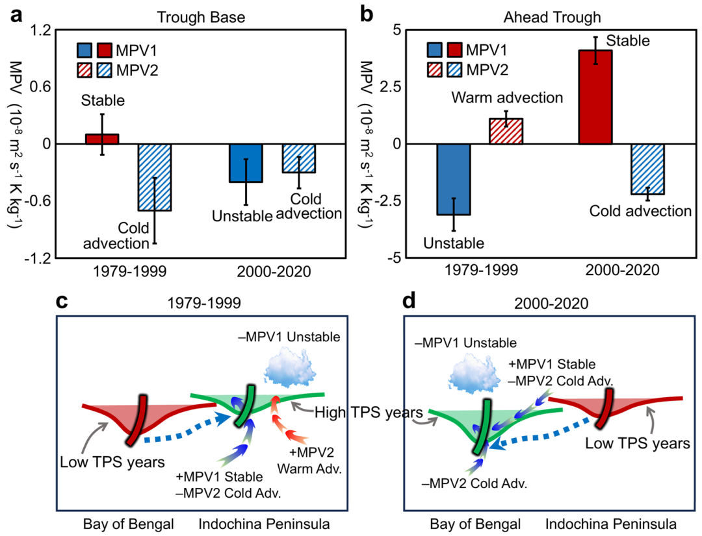
图 3 | TPS 驱动的 IBT 动力学的理论诊断。
Fig. 3 | Theoretical diagnostics of TPS-driven IBT dynamics.
春季 700 hPa 湿位涡（MPV1/MPV2，1 PVU = 10⁻⁶ m² s⁻¹ K kg⁻¹）异常，分别为 a 槽底和 b 槽前区域，以 1979–1999 年与 2000–2020 年高、低 TPS 年份的区域平均之差表示。
Spring moisture potential vorticity (MPV1/MPV2, 1PVU = 10⁻⁶ m² s⁻¹ K kg⁻¹) anomalies at 700 hPa for a trough base and b ahead of trough regions, shown as area-mean differences between high and low TPS years during 1979–1999 and 2000–2020.
物理上，MPV1 > 0：对流稳定；MPV1 < 0：对流不稳定；MPV2 > 0：暖平流；MPV2 < 0：冷平流（见“方法”）。
Physically, MPV1 > 0: Convectively stability; MPV1 < 0: Convectively instability; MPV2 > 0: Warm advection; MPV2 < 0: Cold advection (see “Methods”).
误差棒：95% 置信区间（CI；±1.96 × 标准误）。
Error bars: 95% CI (confidence intervals; ±1.96 × standard error).
MPV1 和 MPV2 的空间分布见补充图 7。
Spatial distributions of MPV1 and MPV2 are shown in Supplementary Fig. 7.
示意图（MPV 框架）展示了 c 1979–1999 年和 d 2000–2020 年 TPS–IBT 关系的反转。
The schematic (MPV framework) illustrates the reversal in TPS-IBT relationship for c 1979–1999 and d 2000–2020.
数据来源：ERA5 再分析数据集。
Data sources: ERA5 reanalysis datasets.
在 2000–2020 年，正的一致型 TPS 分布在槽前诱发冷平流（MPV2 = (−2.2 ± 0.3) × 10⁻² PVU；图 3b 和补充图 7），伴随稳定性增强（MPV1 = (4.1 ± 0.6) × 10⁻² PVU；图 3b）和降水抑制（补充图 6d），导致位涡耗散和随之而来的槽前减弱（图 1e）。
During 2000–2020, the positive coherent TPS pattern induces cold advection ahead of the trough (MPV2 = (−2.2 ± 0.3) × 10⁻² PVU; Fig. 3b and Supplementary Fig. 7), accompanied by enhanced stability (MPV1 = (4.1 ± 0.6) × 10⁻² PVU; Fig. 3b) and precipitation suppression (Supplementary Fig. 6d), resulting in potential vorticity dissipation and consequent trough-ahead weakening (Fig. 1e).
在槽底，冷平流（MPV2 = (−0.4 ± 0.2) × 10⁻² PVU；图 3a）促进位涡耗散，而对流不稳定（MPV1 = (−0.7 ± 0.3) × 10⁻² PVU；图 3a）和正降水异常（补充图 6d）则增强位涡制造。
At the trough base, cold advection (MPV2 = (−0.4 ± 0.2) × 10⁻² PVU; Fig. 3a) promotes potential vorticity dissipation, while convective instability (MPV1 = (−0.7 ± 0.3) × 10⁻² PVU; Fig. 3a) and positive precipitation anomalies (Supplementary Fig. 6d) enhance potential vorticity generation.
由于不稳定性超出冷平流约 75%，槽底整体加深。
As instability exceeds cold advection by ~75%, net trough base deepening occurs.
因此，槽前受抑与槽底加深增强并存，使 IBT 在孟加拉湾上空持续增强（图 1e）。
Therefore, suppressed trough-ahead alongside amplified trough base deepening sustains persistent IBT intensification over the Bay of Bengal (Fig. 1e).
总体而言，MPV 分析证实，2000 年以前槽前的暖平流和不稳定有利于 IBT 东移，而 2000 年以后相反的条件则增强 IBT 加深。
Overall, the MPV analysis confirms that warm advection and instability ahead of the trough favor IBT eastward shifts before 2000, while opposite conditions enhance IBT deepening after 2000.
我们识别出 IBT–TPS 年际联系的翻转：由负相关（1979–1999 年）转为正相关（2000–2020 年）。
We identify a reversal in interannual IBT-TPS linkage, shifting from negative correlation (1979–1999) to positive (2000–2020).
这一 21 年尺度的转变促使我们去探究气候系统内部的年代际调制作用。
This 21-year transition motivate us to figure out decadal-scale modulations within climate system.
我们的分析表明，春季 TPS 在 1979–1999 年与正的 PDO 型相关，但在 2000–2020 年转为与负的 PDO 型相关，且这一信号可追溯到前一个冬季（补充图 8）。
Our analysis shows that spring TPS correlates with a positive PDO pattern during 1979–1999, but shift to a negative PDO pattern during 2000–2020, with this signature traceable back to the preceding winter (Supplementary Fig. 8).
值得注意的是，PDO 本身在 2000 年前后发生了位相转换（图 4a）。
Notably, the PDO itself undergoes a phase shift around 2000 (Fig. 4a).
当 PDO 处于正位相时，IBT–TPS 相关为负；而在 PDO 负位相期间，相关变为正（图 4a 左图），这意味着 PDO 调制了这一关系的反转。
When the PDO is in positive phase, the IBT-TPS correlation is negative, whereas during negative PDO phase, the correlation becomes positive (left panel in Fig. 4a), implying PDO modulates this relationship reversal.
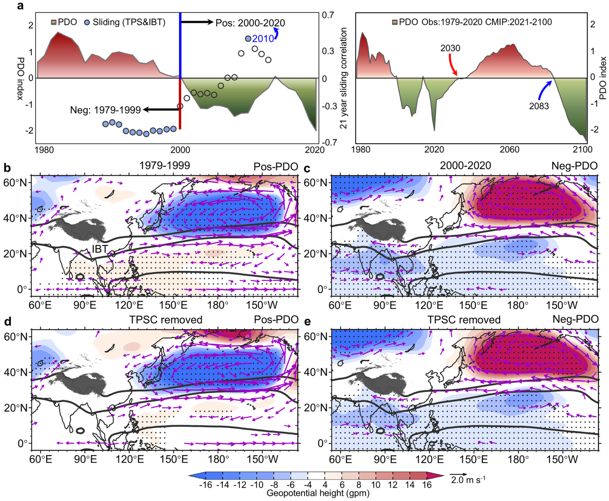
图 4 | PDO 对 TPS–IBT 年际联系的调制。
Fig. 4 | PDO modulation of TPS-IBT interannual linkage.
a 左图显示春季标准化 PDO 指数（基于中心年份的 10 年滑动平均；彩色曲线）以及 21 年滑动 TPS–IBT 指数相关（圆点）。
a Left panel displays the spring standardized PDO index (10-year running mean based on centered years; color curve) along with 21-year sliding TPS-IBT index correlations (dots).
实心圆点表示通过 90% 置信水平的显著相关，空心圆点表示不显著相关。
Solid dots indicate correlations significant at the 90% confidence level, whereas open dots represent non-significant correlations.
右图显示 1979 至 2100 年的 PDO 指数，由 NCAR 数据（1979–2020 年）与 CMIP5 预估（2021–2100 年）拼接而成71,72。
The right panel shows the PDO index from 1979 to 2100, constructed by combing NCAR data (1979–2020) with CMIP5 projections (2021-2100)71,72.
b、c 分别为 1979–1999 年和 2000–2020 年 700 hPa 位势高度和风场异常对 PDO 正（+PDO；b）、负（−PDO；c）位相的回归型。
b, c Regression patterns 700 hPa geopotential height and wind anomalies against the positive (+PDO; b) and negative (-PDO; c) phases of the PDO index during 1979-1999 and 2000-2020, respectively.
d、e 同 (b、c)，但为去除 TPS 影响后的偏回归型。
d, e As in (b, c), but for partial regression patterns after removing the influence of TPS.
黑点和紫色矢量：通过 95% 显著性检验的区域（双侧 t 检验）。
Black dots and purple vectors: 95% significant regions (two-tailed t-test).
黑色等值线：IBT 控制区（700 hPa 气候态：3030/3081.5 gpm）。
Black contours: IBT control zone (700 hPa climatology: 3030/3081.5 gpm).
数据来源：NOAA 卫星积雪、ERA5 环流场、NCAR PDO 指数和 CMIP5 PDO 指数71,72。
Data sources: NOAA satellite snow cover, ERA5 circulation fields, NCAR PDO index, and CMIP5 PDO index71,72.
CMIP5 PDO 指数的原始数据取自文献 71、72（依据知识共享署名-非商业性使用-禁止演绎 4.0 国际许可）。
The original data for the CMIP5 PDO index were obtained from refs. 71,72 (under a Creative Commons Attribution-NonCommercial-NoDerivatives 4.0 International License).
PDO 正位相（1979–1999 年；图 4b）的特征是北太平洋高纬地区高度负异常，而在热带北印度洋和太平洋则为正的高度和反气旋异常。
The positive PDO phase (1979-1999; Fig. 4b) is characterized by negative height anomalies over the high-latitudinal North Pacific, but positive height and anticyclone anomalies spanning the tropical northern Indian and Pacific Oceans.
反气旋西北侧的西南风异常与高 TPS 分布型所伴随的西南风异常相似（图 1b），表明其在促进 IBT 东移中具有潜在作用。
The southwesterly anomalies along the northwestern flank of anticyclone resemble those associated with high-TPS patterns (Fig. 1b), suggesting a potential role in promoting eastward displacement of the IBT.
相反，PDO 负位相（2000–2020 年）呈现显著不同的环流型（图 4c）。
Conversely, the negative PDO phase (2000–2020) exhibits markedly contrasting circulation patterns (Fig. 4c).
孟加拉湾的气旋性环流与高 TPS 条件紧密对应（图 1c），增强槽底的加强。
The Bay of Bengal cyclonic circulation corresponds closely to high-TPS conditions (Fig. 1c), enhancing trough base intensification.
通过偏回归去除 TPS 的影响后，北印度洋和西北太平洋上由 PDO 驱动的环流异常明显减弱（图 4d、e）。
After removing the influence of TPS through partial regression, the PDO-driven circulation anomalies over the northern Indian and northwestern Pacific Oceans are clearly weakened (Fig. 4d, e).
在孟加拉湾区域（84°E–105°E，8°N–22°N），扣除 TPS 后，PDO 指数对高度场的回归系数在 1979–1999 年下降约 36.1%（从 3.6 gpm 降至 2.3 gpm），在 2000–2020 年下降约 4.3%（从 7.0 gpm 降至 6.7 gpm）。
Over the Bay of Bengal (84°E–105°E, 8°N-22°N), the regression coefficient of the PDO index onto the height field decreases by ~36.1% (from 3.6 gpm to 2.3 gpm) during 1979–1999 and by ~4.3% (from 7.0 gpm to 6.7 gpm) during 2000–2020 after the TPS is accounted for.
这一结果，连同春季 TPS 强迫本身就能在这些区域产生类似大气环流型的事实（图 2），表明 TPS 起着记忆机制的作用。
This result, together with the fact that spring TPS forcing alone can generate similar atmospheric circulation pattern across these regions (Fig. 2), indicates that the TPS acts as a memory mechanism.
它储存 PDO 信号，并在春季通过积雪引起的非绝热强迫将其释放，从而改变 IBT 的位置。
It stores PDO signals and releases them during spring through snow-induced diabatic forcing, thereby altering the locations of the IBT.
冬季 IBT 变化与局地气旋异常相联系，并受来自热带强迫的中纬度遥相关调控10,15,18,50。
Winter IBT variations are linked to local cyclonic anomalies and regulated by mid-latitude teleconnections from tropical forcing10,15,18,50.
相比之下，本文以 TPS 作为物理驱动因子，探讨春季 IBT 变率的起源。
In contrast, this work investigates the origins of spring IBT variability using TPS as a physical driver.
积雪反照率反馈对青藏高原海拔依赖性增暖的贡献51–53，使我们的发现处于喜马拉雅—青藏地区冰冻圈-大气相互作用这一更广阔的背景下。
The contribution of snow-albedo feedback to elevation-dependent warming on the Tibetan Plateau51–53 place our findings within the wider context of cryosphere-atmosphere interactions across the Himalaya-Tibetan region.
IBT 位置的变化直接影响降水分布，凸显了其对未来干旱与洪涝风险的意义。
Variations in the IBT position directly affect precipitation distribution, highlighting its implication for future drought and flood risks.
在 PDO 负位相（2000 年以来）下，与 TPS 相关的 IBT 在孟加拉湾上空增强，使南亚（约 0.6–0.8 mm/day）和东南亚（约 0.9–1.2 mm/day；补充图 6d）春季降水增多。
Under the negative phase of the PDO (since 2000), the TPS-associated IBT has strengthened over the Bay of Bengal, enhancing spring rainfall across South (~0.6–0.8 mm/day) and Southeast Asia (~0.9–1.2 mm/day; Supplementary Fig. 6d).
降水的这一增加很可能导致极端水文事件更为频发，2000 年以来印度西部严重山洪和地质灾害风险的显著上升即是例证54。
This increase in precipitation likely led to a higher incidence of extreme hydrological events, exemplified by the markedly increased risk of severe flash floods and geological hazards in western India since 200054.
近期一个显著的例子是 2022 年巴基斯坦的特大洪水，该事件可能受到前一个春季异常 TPS 条件的影响55。
A notable recent example is the catastrophic 2022 Pakistan floods, the event that may have been influenced by anomalous TPS conditions during the preceding spring55.
来自 21 个代表性 CMIP5 模式的多模式预估表明，PDO 负位相预计将持续到 2030 年代初（图 4a 右图），这意味着上述升高的洪涝风险预计将延续至 2030 年。
Multi-model projections from 21 representative CMIP5 models indicate that the negative PDO phase is expected to persist until the early 2030s (right panel in Fig. 4a), suggesting that these elevated flood risks are projected to persist through 2030.
在 PDO 正位相期间，与 TPS 相关的 IBT 东移，从而增加东亚季风区的降水，同时由于位势高度升高而减少中南半岛的降水（补充图 5c、6d）。
During the positive PDO phase, the TPS-associated IBT moves eastward, which enhances precipitation in the East Asian monsoon region while reduces rainfall over the Indochina Peninsula due to heightened geopotential heights (Supplementary Figs. 5c, 6d).
鉴于这些地区春季干旱反复发生56,57，降水的这一减少会显著加剧干旱风险。
Given the recurrent spring droughts in these areas56,57, this reduction in rainfall significantly exacerbates the risk of drought.
多模式模拟表明，从 2030 年代到 2080 年代，PDO 预计将转为正位相（图 4a 右图），从而加剧这些地区的干旱风险。
Multi-model simulations indicate that from the 2030s to the 2080s, the PDO is expected to transition to a positive phase (right panel in Fig. 4a), thereby intensifying drought risks across these regions.
尽管以往研究将冬季 TPS 视为区域气候异常的前兆30,58,59，但我们的分析表明，与 IBT 相联系的 TPS 信号来源于前一个冬半年的积雪增量，而非冬季 TPS（补充图 9）。
Although previous studies identify winter TPS as a precursor to regional climate anomalies30,58,59, our analysis shows that the IBT-linked TPS signal originates from TPS increment during the preceding winter half-year —not winter TPS (Supplementary Fig. 9).
这一区别很可能源于青藏高原积雪累积（与积雪范围相比）产生的更强的绝热冷却26，从而使冬半年积雪累积成为春季 IBT 预测的关键预报因子。
This distinction likely stems from the stronger adiabatic cooling produced by Tibetan Plateau snow accumulation versus snow cover extent26, making winter half-year snow accumulation a key predictor for spring IBT forecasts.
值得注意的是，尽管数值模拟证实 TPS 调制 IBT 动力学（图 2），但 IBT（或孟加拉湾气旋性环流）也反过来影响青藏高原降水2,60–62。
Notably, although numerical modeling confirms TPS modulates IBT dynamics (Fig. 2), the IBT (or Bay of Bengal cyclonic circulation) also influences Tibetan Plateau precipitation2,60–62.
此外，本研究揭示 PDO 调制 TPS–IBT 联系，但 TPS–IBT 关系的反转发生在 2000 年前后，比 2001 年的 PDO 位相转换早 1 年。
In addition, this study reveals that the PDO modulates TPS-IBT linkage, but the reversal in the TPS-IBT relationship occurs around 2000, 1 year prior to the PDO phase shift in 2001.
这意味着 TPS–IBT 反转可能影响 PDO 随后的位相转换。
This implies that TPS-IBT reversal may affect the subsequent phase transition of the PDO.
这些复杂的相互作用需要通过进一步研究来厘清其因果关系，这对于推进对 TPS–IBT 联系的机理认识至关重要。
These complex interactions necessitate further investigation to disentangle their causality, which is crucial for advancing mechanistic understanding of the TPS-IBT linkages.
研究使用了三种积雪数据：来自美国国家海洋和大气管理局（NOAA，1979–2023 年）和美国国家冰雪数据中心（NSIDC，1979–2020 年）的卫星周积雪范围数据63,64，以及基于 ECMWF 第五代大气再分析（ERA5，1979–2023 年）的 ERA5-Land 模式积雪深度数据65。
Three snow datasets were used: satellite-derived weekly snow cover extent obtained from the National Oceanic and Atmospheric Administration (NOAA, spanning 1979–2023)63 and the National Snow and Ice Data Center (NSIDC, covering 1979–2020)64, and model-based ERA5-Land snow depth data sourced from the fifth generation of ECMWF's atmospheric reanalysis (ERA5, covering 1979–2023)65.
值得注意的是，青藏高原中东部（89°E–103°E，26°N–36°N）春季积雪范围广阔且年际变率大25,66。
Notably, the central-eastern Tibetan Plateau (89°E–103°E, 26°N–36°N) exhibits extensive spring snow cover with high interannual variability25,66.
为刻画这一变率，我们将春季 TPS 指数定义为该区域积雪范围（雪盖）的面积加权平均。
To characterize this variability, we defined the spring TPS index as the area-weighted mean of snow cover across this region.
指数序列经去趋势、年际滤波和标准化处理。
Index values were detrended, subjected to interannual filtering and standardized.
所有数据集得到的 TPS 指数波动一致（补充图 10），数据集之间的相关性较强：0.96（NOAA/NSIDC）和 0.53（NOAA/ERA5-Land；均 p < 0.001），证实了其对年际变率的可靠捕捉。
All datasets produced TPS indices with coherent fluctuations (Supplementary Fig. 10), showing stronger inter-dataset correlation: 0.96 (NOAA/NSIDC) and 0.53 (NOAA/ERA5-Land; all p < 0.001), confirming robust interannual variability capture.
风、涡度、温度、位势高度、比湿和降水场（1950–2023 年）等大气变量取自 ERA5 再分析67。
Atmospheric variables including wind, vorticity, temperature, geopotential height, specific humidity, and precipitation fields (1950–2023) were derived from ERA5 reanalysis67.
为进行验证，我们还使用了美国国家环境预报中心-能源部再分析-2（NCEP-R2，1979–2024 年）68数据集，结果一致。
For verification, we additionally employed the National Centers for Environmental Prediction–Department of Energy Reanalysis-2 (NCEP-R2, covering 1979-2024;)68 datasets, yielding consistent findings.
逐月全球海表温度数据（1870–2024 年）来自英国气象局哈德莱中心的 HadISST 数据集69。
Monthly global sea surface temperature data (1870–2024) were obtained from the HadISST dataset provided by the UK Met Office Hadley Centre69.
PDO 依据 Mantua 等70的定义，取为北太平洋海表温度异常的经验正交函数（EOF）第一模态。
The PDO is defined as the leading Empirical Orthogonal Function of North Pacific sea surface temperature anomalies, according to Mantua et al.70.
历史 PDO 指数（1854–2024 年）来自美国国家大气研究中心（NCAR）。
The historical PDO index (1854–2024) was sourced from the National Center for Atmospheric Research (NCAR).
PDO 指数的未来预估取自以往研究71,72，这些研究使用了耦合模式比较计划第 5 阶段（CMIP5）的 21 个代表性模式。
Future projections of the PDO index were derived from previous studies71,72, which employed 21 representative models from the Coupled Model Intercomparison Project Phase 5 (CMIP5).
通过统计综合和时空相关方法，这些研究生成了 21 世纪的 PDO 时间序列。
Using statistical synthesis and spatiotemporal correlation methods, these studies produced a PDO time series for the 21st century.
该预估序列已用观测数据校准，以确保其位相转换与历史记录一致。
This projected series has been calibrated against observational data to ensure consistency in phase transitions with the historical record.
传统的积雪强迫试验通过反照率修改、非绝热冷却或大气辐散等代理量来模拟积雪效应27,66,73,74，而我们直接用卫星观测的积雪异常强迫模式，以整合积雪反照率反馈与水文反馈。
While conventional snow-forcing experiments simulate snow effcts via proxies, such as albedo modifications, diabatic cooling, or atmospheric divergence27,66,73,74, we directly force models with satellite-observed snow cover anomalies to integrate snow-albedo and hydrological feedbacks.
这一方法在 TPS 强迫与大气响应之间建立了更直接的物理联系。
This approach establishes a more direct physical linkages between TPS forcing and atmospheric responses.
我们使用 NCAR 通用地球系统模式 1.2 版大集合（CESM-LEN）75来实现这一方案。
We implement this scheme using the NCAR Community Earth System Model version 1.2 Large Ensemble (CESM-LEN)75.
CESM-LEN 配置将 CAM4（通用大气模式第 4 版）与 CLM4.5（通用陆面模式第 4.5 版）耦合，并包含海洋和海冰分量。
The CESM-LEN configuration couples CAM4 (the Community Atmosphere Model v4) with CLM4.5 (the Community Land Model v4.5), incorporating ocean and sea-ice components.
利用卫星反演的 TPS 异常开展了四组积雪扰动试验（详见补充表 2）。
Four snow perturbation experiments were performed using satellite-derived TPS anomalies (see Supplementary Table 2 for details).
(1) 正准跷跷板型 TPS 试验（PosSSExp）：以正位相 TPS 异常强迫（补充图 4a）。
(1) Positive quasi-seesaw TPS experiment (PosSSExp): Forced with positive-phase TPS anomalies (Supplementary Fig. 4a).
(2) 负准跷跷板型 TPS 试验（NegSSExp）：以负位相 TPS 异常强迫。
(2) Negative quasi-seesaw TPS experiment (NegSSExp): Forced with negative-phase TPS anomalies.
每组试验包含 45 个集合成员。
Each experiment comprised 45 ensemble members.
将观测的 TPS 异常施加于青藏高原以驱动 CESM-LEN，并给定气候态海表温度和海冰，以分离积雪强迫的响应。
Observational TPS anomalies were imposed over the Tibetan Plateau to drive CESM-LEN, and climatological sea surface temperatures and sea-ice were prescribed to isolate snow-forced responses.
剔除最初 25 年作为模式起转后，分析了最后 20 个集合成员。
After discarding the initial 25 years as model spin-up, the final 20 ensemble members were analyzed.
对准跷跷板型 TPS 强迫的大气响应通过计算集合平均之差（PosSSExp – NegSSExp）来评估，以分离 TPS 强迫的影响（图 2a、c、e）。
Atmospheric responses to the quasi-seesaw TPS forcing were assessed by calculating the ensemble mean difference (PosSSExp – NegSSExp) to isolate the TPS forcing impacts (Fig. 2a, c, e).
在准跷跷板型试验之后，我们又进行了两组一致型 TPS 强迫试验。
Following the quasi-seesaw experiments, we conducted additional two coherent TPS forcing experiments.
(3) 正一致型 TPS 试验（PosCHRExp）：以正位相 TPS 异常强迫（补充图 4b）。
(3) Positive coherent TPS experiment (PosCHRExp): Forced with positive-phase TPS anomalies (Supplementary Fig. 4b).
(4) 负一致型 TPS 试验（NegCHRExp）：以负位相异常强迫。
(4) Negative coherent TPS experiment (NegCHRExp): Forced with negative-phase anomalies.
所有试验设置与准跷跷板型试验相同：45 个集合成员、给定海表温度和海冰浓度、分析最后 20 个达到平衡的成员。
All experimental configurations remained identical to the quasi-seesaw experiments: 45-member ensembles, prescribed sea surface temperature and sea-ice concentrations, and analysis of the final 20 equilibrated members.
大气响应以集合平均之差（PosCHRExp – NegCHRExp；图 2b、d、f）来量化。
Atmospheric responses were quantified as the ensemble mean difference (PosCHRExp – NegCHRExp; Fig. 2b, d, f).
湿位涡（MPV）理论将干空气的 Ertel 位涡框架推广到湿空气，以刻画非绝热与斜压过程45,76。
Moist potential vorticity (MPV) theory extends the dry Ertel potential vorticity framework to capture diabatic and baroclinic processes in moist air masses45,76.
该方法可定量诊断垂直涡度的制造、热带风暴、飑线和降水动力学46,47,77。
This approach quantitatively diagnoses vertical vorticity generation, tropical stroms, squall lines, and precipitation dynamics46,47,77.
MPV 理论已针对存在相变的湿大气得到验证，我们将其用于量化 IBT 的动力学发展和移动（图 3）。
Validated for phase-changing moist atmospheres, we employ MPV theory to quantify IBT dynamical development and movement (Fig. 3).
按照已有公式46,47,76，MPV 定义为：
Following established formulations46,47,76, MPV is defined as:
MPV = −g(ζp + f)(∂θse/∂p) + g(∂v/∂p)(∂θse/∂x) − g(∂u/∂p)(∂θse/∂y) (1)
MPV1 = −g(ζp + f)(∂θse/∂p) (2)
MPV2 = g[(∂v/∂p)(∂θse/∂x) − (∂u/∂p)(∂θse/∂y)] (3)
其中 ζp 表示相对涡度，g 为重力加速度，f 为科里奥利参数，θse 为相当位温，u 和 v 分别代表纬向和经向风场。
where ζp denotes relative vorticity, g gravity acceleration, f the Coriolis parameter, and θse equivalent potential temperature, with u and v representing zonal and meridional wind fields, respectively.
MPV1 诊断对流不稳定：正值表示大气稳定，负值表示对流不稳定。
MPV1 diagnoses convective instability: positive values indicate atmospheric stability, while negative values denote convective instability.
MPV2 量化湿斜压性：正值表示暖平流，负值表示冷平流。
MPV2 quantifies moist baroclinicity; positive values signify warm advection whereas negative values indicate cold advection.
由于斜压性和对流不稳定都增强垂直涡度的制造46–48，MPV1 < 0 且 MPV2 > 0 的配置为槽的发展创造了最有利的条件。
Since both baroclinicity and convective instability enhance the generation of vertical vorticity46–48, the configuration MPV1 < 0 and MPV2 > 0 fosters optimal conditions for trough development.
春季 IBT 槽底位于孟加拉湾上空，其最大变率出现在 84°–105°E、8°–22°N 区域（补充图 1a）。
During boreal spring, the IBT trough base lies over the Bay of Bengal, exhibiting its maximum variability over the region 84°–105°E, 8°–22°N (Supplementary Fig. 1a).
采用基于 700 hPa 涡度场的冬季 IBT 指数方法2,13,15，我们将春季 IBT 指数定义为该区域 700 hPa 涡度场的面积加权平均。
Adopting the winter IBT index methodology based on 700 hPa vorticity field2,13,15, we define the spring IBT index as the area-weighted mean 700 hPa vorticity field over this domain.
与主要局限于孟加拉湾北部的冬季 IBT 变率不同2,10，春季槽向东延伸至西太平洋（补充图 1a 插图），反映出更强的纬向移动性（图 1d、e）。
Unlike winter IBT variability confined primarily to the northern Bay of Begnal2,10, the spring trough extends eastward into the western Pacific (Supplementary Fig. 1a, inset), reflecting enhanced zonal mobility (Fig. 1d, e).
为更好地刻画这一纬向位移，我们引入基于高度的 IBT 指数：84°–105°E、8°–22°N 区域 700 hPa 位势高度的面积加权平均。
To better characterize this zonal displacement, we introduce a height-based IBT index: the area-weighted mean 700 hPa geopotential height over 84°–105°E, 8°–22°N.
我们同时采用基于涡度和基于高度的 IBT 指数，考察它们与 TPS 的年际联系。
We employ both the vorticity-based and height-based IBT indices to investigate their interannual connections with TPS.
使用两种指数的滑动相关分析得出一致的结果（图 1a）。
Sliding correlation analysis using both indices produces consistent results (Fig. 1a).
用 19 年和 21 年滑动窗口进行的敏感性检验证实了这一关系稳定的转变时间，表明 TPS–IBT 联系发生了统计显著的年代际转型。
Sensitivity tests with 19-year and 21-year moving windows confirm robust transition timing in this relationship, indicating a statistically significant regime shift in TPS-IBT linkage.
为研究 TPS 影响 IBT 变化的物理机制，我们以 ±0.5 个标准差为阈值挑选高、低 TPS 年份（补充表 1）。
To investigate the physical mechanisms through which TPS influence IBT variations, we identified high- and low-TPS years using ±0.5 standard deviation thresholds (Supplementary Table 1).
对这些挑选出的年份进行了大气场的合成分析。
Composite analyses of atmospheric fields were conducted for these selected years.
统计显著性用双侧 t 检验评估，高、低 TPS 年份的合成 t 统计量按下式计算：
Statistical significance was evaluated using a two-sided t-test, with composite t statistics for high- and low-TPS years calculated as:
t = [(1/NH)Σixi − (1/NL)Σjxj] / [sp√(1/NH + 1/NL)] (4)
sp = √[((NH − 1)s²H + (NL − 1)s²L) / (NH + NL − 2)] (5)
其中 NH 和 NL 分别表示高、低 TPS 年份的样本量。
where NH and NL denote the sample sizes for high- and low-TPS years, respectively.
sH 和 sL 分别表示高、低 TPS 年份的样本标准差。
sH and sL represent sample standard deviation for high- and low-TPS years, respectively.
sp 表示两组共同的合并标准差。
sp indicates the standard deviation across both groups.
自由度由下式估计：
The degree of freedom is estimated through:
Ndf = (s²H/NH + s²L/NL)² / [((s²H/NH)²/(NH − 1)) + ((s²L/NL)²/(NL − 1))] (6)
我们使用偏回归分析来考察 PDO 如何调制 TPS 对 IBT 变率的独立影响。
We employed partial regression analysis to examine how the PDO modulates TPS's independent influence on IBT variability.
该方法通过去除与 TPS 共变的分量来统计上分离 PDO 的动力作用：
This method statistically isolates PDO's dynamical role by removing TPS-covarying components through:
α(x, y) = Σmt=1 (PDO′res(t) × Y′res(x, y, t)) / Σmt=1 (PDO′res(t))² (7)
其中 α 是量化 PDO 独立影响的偏回归系数，Y 表示目标大气环流场。
where α is the partial regression coefficient quantifying PDO's independence influence, and Y denotes the target atmospheric circulation fields.
回归残差按下式计算：PDOres(t) = PDO(t) − βTPS→PDO × TPS(t)；Yres(x, y, t) = Y(x, y, t) − βTPS→PDO × TPS(t)。
The regression residuals are calculated as: PDOres(t) = PDO(t) − βTPS→PDO × TPS(t); Yres(x, y, t) = Y(x, y, t) − βTPS→PDO × TPS(t).
带撇的项（如 PDO′）表示对时间平均的偏差。
Primed terms (e.g., PDO′) denote deviations from the temporal mean.
为分离年际尺度的 TPS–IBT 联系，我们对指数和空间场应用了截止频率为 0.125 年⁻¹ 的高通巴特沃斯滤波。
To isolate the interannual TPS-IBT linkage, we applied a high-pass Butterworth filter with a cutoff frequency of 0.125 year⁻¹ to both indices and spatial fields.
该滤波去除时间尺度长于 8 年的气候变率，保留 8 年以下的年际波动。
This filter removes climate variability on timescale longer than 8 years, retaining sub-8-year interannual fluctuation.
此外，用线性最小二乘法量化了 TPS 指数之间的可比较性（补充图 10）。
Additionally, linear least squares quantified coverability between TPS indices (Supplementary Fig. 10).
合成分析和回归分析的统计显著性用双侧 Student's t 检验评估，以 p < 0.1 和 p < 0.05 分别界定 90% 和 95% 置信水平。
Statistical significance of the composite and regression analysis was assessed using the two-sided Student's t-test, with p < 0.1 and p < 0.05 defining the 90% and 95% confidence levels, respectively.
本研究使用的图件和指数可在 Zenodo78 获取：https://doi.org/10.5281/zenodo.17120424；
The figures and indices used in this study are available on Zenodo78 at https://doi.org/10.5281/zenodo.17120424;
NSIDC 积雪数据可在以下地址获取：https://doi.org/10.5067/P7O0HGJLYUQU；
The NSIDC snow cover data are available at: https://doi.org/10.5067/P7O0HGJLYUQU;
NOAA 积雪数据可在以下地址获取：https://doi.org/10.7289/V5N014G9；
The NOAA snow cover data are available at: https://doi.org/10.7289/V5N014G9;
ERA5-Land 积雪深度数据可在以下地址获取：https://doi.org/10.24381/cds.68d2bb30；
The ERA5-Land snow depth are available at: https://doi.org/10.24381/cds.68d2bb30;
ERA5 大气变量见：https://doi.org/10.24381/cds.6860a573；
The ERA5 atmospheric variables at: https://doi.org/10.24381/cds.6860a573;
英国气象局哈德莱中心的海表温度数据可在以下地址获取：https://www.metoffice.gov.uk/hadobs/hadisst/；
The Met Office Hadley Centre sea surface temperature are available at: https://www.metoffice.gov.uk/hadobs/hadisst/;
NCEP-R2 大气变量可在以下地址获取：https://doi.org/10.5065/FPR3-MW53；
The NCEP-R2 atmospheric variables are available at: https://doi.org/10.5065/FPR3-MW53;
NCAR PDO 指数可在以下地址获取：https://climatedataguide.ucar.edu/climate-data/pacific-decadal-oscillation-pdo-definition-and-indices；
The NCAR PDO index are available at: https://climatedataguide.ucar.edu/climate-data/pacific-decadal-oscillation-pdo-definition-and-indices;
未来 PDO 指数可在 https://github.com/atrmli/data 获取。
The future PDO index is available at https://github.com/atrmli/data.
合成分析和偏回归分析使用基于 Intel® Fortran 编译器开发的脚本完成，这些脚本可在 Zenodo79 公开获取：https://doi.org/10.5281/zenodo.17117540。
The composite and partial regression analysis were performed using scripts developed with the Intel® Fortran Compiler, which is publicly available on Zenodo79 at https://doi.org/10.5281/zenodo.17117540.
其他代码可向通讯作者索取。
Other codes are available upon request from the corresponding author.
收到日期：2025 年 9 月 28 日；接收日期：2025 年 12 月 10 日；
Received: 28 September 2025; Accepted: 10 December 2025;
C.Z. 感谢厦门大学近海海洋环境科学国家重点实验室杰出博士后奖学金和国家留学基金管理委员会（文件号 202306310194）的资助。
C.Z. acknowledges financial support from the Outstanding Postdoctoral Scholarship provided by the State Key Laboratory of Marine Environmental Science at Xiamen University and the Chinese Scholarship Council (File No.202306310194).
本研究得到国家自然科学基金项目 42305016（资助 C.Z.）和 42030602（资助 A.D.），以及国家自然科学基金联合基金项目 U2442205（资助 A.D.）的支持。
This research was supported by the National Natural Science Foundation of China through grants 42305016 (to C.Z.) and 42030602 (to A.D.), and the Joint Funds of the National Natural Science Foundation of China through grants U2442205 (to A.D.).
C.Z. 构思了本研究，完成了模拟并撰写初稿。
C.Z. conceived the study, conducted simulations and wrote the initial manuscript.
所有作者共同完成了形式分析。
All authors performed the formal analysis.
A.D. 提供了关键反馈并修改了稿件。
A.D provided critical feedback and revised the manuscript.
作者声明不存在利益冲突。
The authors declare no competing interests.
补充信息：本文在线版本包含补充材料，可在 https://doi.org/10.1038/s41612-025-01301-8 获取。
Supplementary information The online version contains supplementary material available at https://doi.org/10.1038/s41612-025-01301-8.
通讯作者及材料索取请联系 Chao Zhang 或 Anmin Duan。
Correspondence and requests for materials should be addressed to Chao Zhang or Anmin Duan.
重印和许可信息见 http://www.nature.com/reprints。
Reprints and permissions information is available at http://www.nature.com/reprints
出版者说明：Springer Nature 对出版地图中的管辖权主张和机构隶属关系保持中立。
Publisher's note Springer Nature remains neutral with regard to jurisdictional claims in published maps and institutional affiliations.
本文根据知识共享署名-非商业性使用-禁止演绎 4.0 国际许可协议授权。
Open Access This article is licensed under a Creative Commons Attribution-NonCommercial-NoDerivatives 4.0 International License,
该许可允许以任何媒介或形式进行任何非商业性使用、共享、分发和复制，前提是您对原作者和来源给予适当的署名，提供知识共享许可的链接，并说明是否修改了受许可的材料。
which permits any non-commercial use, sharing, distribution and reproduction in any medium or format, as long as you give appropriate credit to the original author(s) and the source, provide a link to the Creative Commons licence, and indicate if you modified the licensed material.
依据该许可，您无权分享由本文或其部分内容衍生的改编材料。
You do not have permission under this licence to share adapted material derived from this article or parts of it.
本文中的图像或其他第三方材料包含在本文的知识共享许可范围内，除非材料的署名行中另有说明。
The images or other third party material in this article are included in the article's Creative Commons licence, unless indicated otherwise in a credit line to the material.
如果材料未包含在本文的知识共享许可范围内，且您的预期用途不为法律法规所允许或超出许可允许的范围，您需要直接从版权持有人处获得许可。
If material is not included in the article's Creative Commons licence and your intended use is not permitted by statutory regulation or exceeds the permitted use, you will need to obtain permission directly from the copyright holder.
要查看本许可的副本，请访问 http://creativecommons.org/licenses/by-nc-nd/4.0/。
To view a copy of this licence, visit http://creativecommons.org/licenses/by-nc-nd/4.0/.
© The Author(s) 2025
© The Author(s) 2025
《Reversal of the Tibetan snow-India Burma trough relationship》补充材料
Supplementary materials for Reversal of the Tibetan snow-India Burma trough relationship
Chao Zhang1,2 和 Anmin Duan1
Chao Zhang1,2 and Anmin Duan1
1厦门大学海洋与地球学院，近海海洋环境科学国家重点实验室，海洋气象与气候变化研究中心，中国厦门
1Center for Marine Meteorology and Climate Change, State Key Laboratory of Marine Environmental Science, College of Ocean and Earth Sciences, Xiamen University, Xiamen, China
2德国基尔亥姆霍兹海洋研究中心（GEOMAR），海洋生物地球化学部，德国基尔
2Marine Biogeochemistry Division, GEOMAR Helmholtz Centre for Ocean Research Kiel, Kiel, Germany
通讯作者：chaozhang@xmu.edu.cn（C.Z.）和 amduan@xmu.edu.cn（A.D.）
Corresponding authors: chaozhang@xmu.edu.cn (C.Z.) and amduan@xmu.edu.cn (A.D.)
本 PDF 文件包含：
This PDF file includes:
补充图 1–10
Supplementary Figures 1‒10
补充表 1–2
Supplementary Tables 1‒2
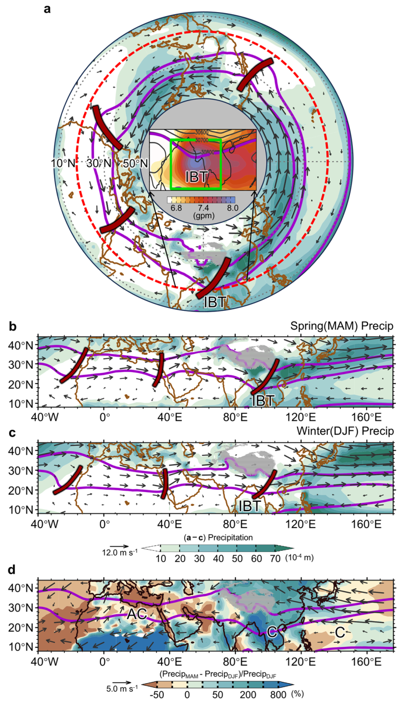
补充图 1. 春季 IBT 特征。
Supplementary Figure 1. Spring IBT characteristics.
a 春季（1979–2023 年）北半球热带-副热带气候态：降水（填色）、700 hPa 风场（矢量）和四条槽轴线最低值（暗红色线）。
a Northern Hemisphere tropical-subtropical climatology in spring (1979-2023): Precipitation (shading), 700 hPa winds (vector), and four trough axis minima (dark red lines).
红色虚线：春季 IBT 最深的槽底和最南的位置。
Red dashed line: Spring IBT's deepest trough-base and southernmost position.
插图：700 hPa 位势高度气候态（等值线）和标准差（填色）。
Insert panel: 700 hPa geopotential height climatology (contours) and standard deviation (shading).
b 同 (a)，但为 IBT 核心区域。
b As in (a), but the IBT core domain.
c 同 (b)，但为冬季对应情形。
c As in (b), but for winter counterpart.
d 春-冬差异：降水变化（填色；(Precipspring – Precipwinter)/Precipwinter）以及春季与冬季的 700 hPa 风场之差（矢量）。
d Spring-winter differences: Precipitation change (shading; (Precipspring – Precipwinter)/Precipwinter) and 700 hPa wind differences between spring and winter (vector).
“AC”/“C”：反气旋/气旋环流。
“AC”/“C”: Anticyclonic/cyclonic circulations.
紫色等值线（所有分图）：IBT 控制区（700 hPa 位势高度：3030/3081.5 gpm）。
Purple contours (all panels): IBT control zone (700 hPa geopotential height: 3030/3081.5 gpm).
数据来源：ERA5 再分析。
Data sources: ERA5 reanalysis.
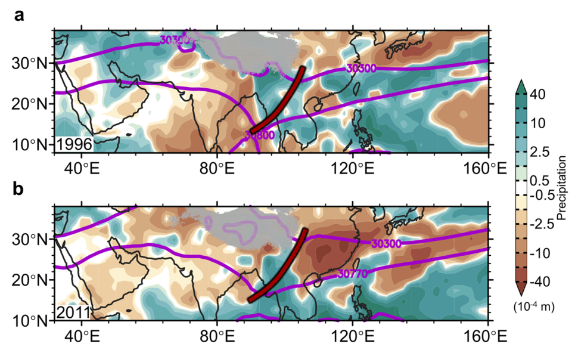
补充图 2. 极端 TPS 年份的 IBT 和降水特征。
Supplementary Figure 2. IBT and precipitation characteristics during extreme TPS years.
a 1996 年春季（极端低 TPS 年份；标准差：−1.5σ）：降水异常（相对于气候态）和 IBT 区域（南边界：3080 gpm；北边界：3030 gpm）。
a Spring 1996 (extreme low TPS year; standard deviation: -1.5σ): Precipitation anomalies (relative to climatology) and IBT domain (southern boundary: 3080 gpm; northern boundary: 3030 gpm).
b 2011 年春季（极端高 TPS 年份；标准差：+1.5σ）：降水异常（相对于气候态）和 IBT 区域（南边界 3077 gpm，北边界 3030 gpm）。
b Spring 2011 (extreme high TPS year; standard deviation: +1.5σ): Precipitation anomalies (relative to climatology) and IBT domain (3077 gpm southern boundary, 3030 gpm northern boundary).
红线：槽轴线最低值。
Red lines: Trough axis minima.
数据来源：ERA5 再分析。
Data sources: ERA5 reanalysis.
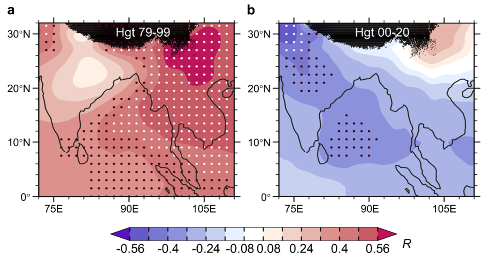
补充图 3. 春季 700 hPa 位势高度异常对 TPS 指数的相关图，(a) 1979–1999 年和 (b) 2000–2020 年。
Supplementary Figure 3. Correlation maps of spring 700 hPa geopotential height anomalies against the TPS index during (a) 1979-1999 and (b) 2000-2020.
黑/白点表示通过 90%/95% 显著性检验的区域（双侧 t 检验）。
Black/white dots indicate regions significant at 90%/95% level (two-sided t-test).
请注意，本图中的高度相关与图 1 符号相反，因为图 1 中的数值经过了反号（乘以 −1）。
Note that the height correlations in this figure appear opposite to Fig. 1 because the values in Fig. 1 were inverted (multiplied by -1).
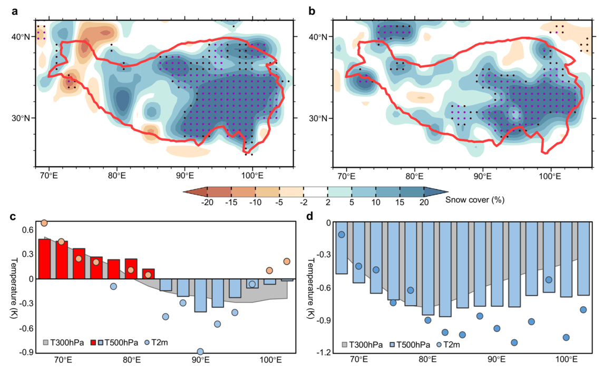
补充图 4. 温度异常对 TPS 变化的响应。
Supplementary Figure 4. Temperature anomaly responses to TPS variations.
a、b 1979–1999 年和 2000–2020 年的春季 TPS 异常，以高、低 TPS 年份的合成差表示。
a, b Spring TPS anomalies for 1979-1999 and 2000-2020, shown as the composite difference between high- and low-TPS years.
黑/紫点表示通过 90%/95% 显著性检验的区域（双侧 t 检验）。
Black/purple dots indicate regions significant at 90%/95% level (two-sided t-test).
c、d 1979–1999 年和 2000–2020 年春季经向平均（28°N–39°N）的 300/500 hPa 和地表（2 m）温度异常，由高减低 TPS 年份之差得到。
c, d Meridional mean (28°N-39°N) spring temperature anomalies at 300/500 hPa and surface (2m) for 1979-1999 and 2000-2020, derived from high minus low TPS year differences.
数据来源：ERA5 再分析。
Data sources: ERA5 reanalysis.
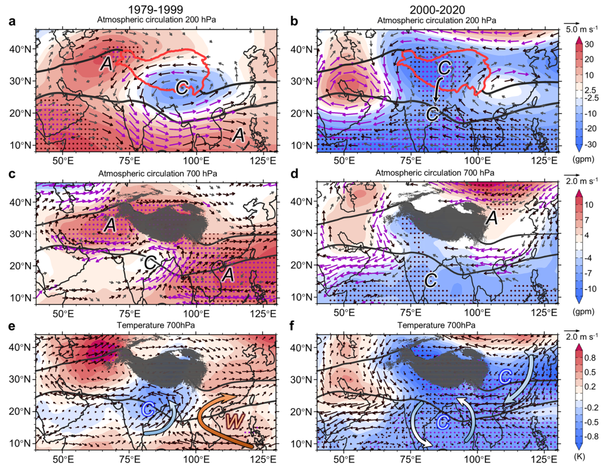
补充图 5. 与 TPS 变化相关的大气环流型。
Supplementary Figure 5. Atmospheric circulation patterns associated with TPS variations.
1979–1999 年和 2000–2020 年春季 (a、b) 200 hPa 和 (c、d) 700 hPa 的位势高度与风场异常，以高、低 TPS 年份的合成差表示。
Spring geopotential height and wind anomalies at (a, b) 200 hPa and (c, d) 700 hPa for 1979-1999 and 2000-2020, shown as the composite difference between high and low TPS years.
e、f 同 (c、d)，但为 700 hPa 温度和风场异常。
e, f As in (c, d), but for 700 hPa temperature and wind anomalies.
黑/紫点表示通过 90%/95% 显著性检验的区域（双侧 t 检验）。
Black/purple dots indicate regions with statistical significance at the 90%/95% levels (two-sided t-test).
(a–d) 中的黑色和紫色矢量表示通过 90%/95% 显著性检验的区域（双侧 t 检验）。
Black and purple vectors in (a-d) indicate regions with statistical significance at the 90%/95% level (two-sided t-test).
蓝色“C”和红色“W”：冷/暖平流。
Blue “C” and red “W”: Cold/warm advection.
黑色等值线：IBT 控制区。
Black contours: IBT control zone.
积雪扰动试验的对应结果见图 2。
Snow perturbation experiment counterparts shown in Fig. 2.
数据来源：ERA5 再分析。
Data sources: ERA5 reanalysis.
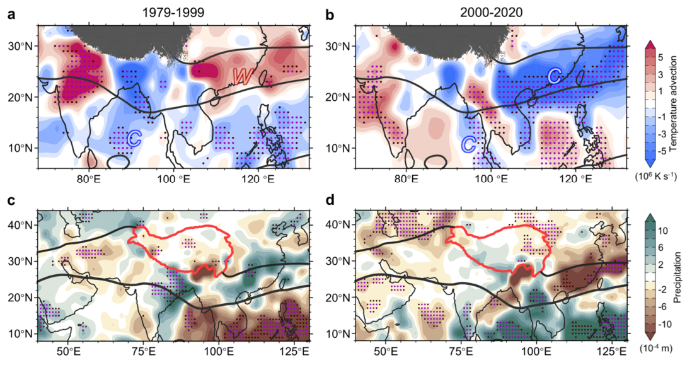
补充图 6. TPS 对温度平流和降水的影响。
Supplementary Figure 6. TPS impacts on temperature advection and precipitation.
1979–1999 年和 2000–2020 年春季 (a、b) 温度平流和 (c、d) 降水异常，以高、低 TPS 年份的合成差计算。
a, b Spring temperature advection and (c, d) precipitation anomalies for 1979-1999 and 2000-2020, calculated as the composite difference between high and low TPS years.
黑/紫点表示通过 90%/95% 显著性检验的区域（双侧 t 检验）。
Black/purple dots indicate regions with statistical significance at the 90%/95% levels (two-sided t-test).
蓝色“C”和红色“W”：暖/冷平流。
Blue “C” and red “W”: Warm/cold advection.
黑色等值线：IBT 控制区。
Black contours: IBT control zone.
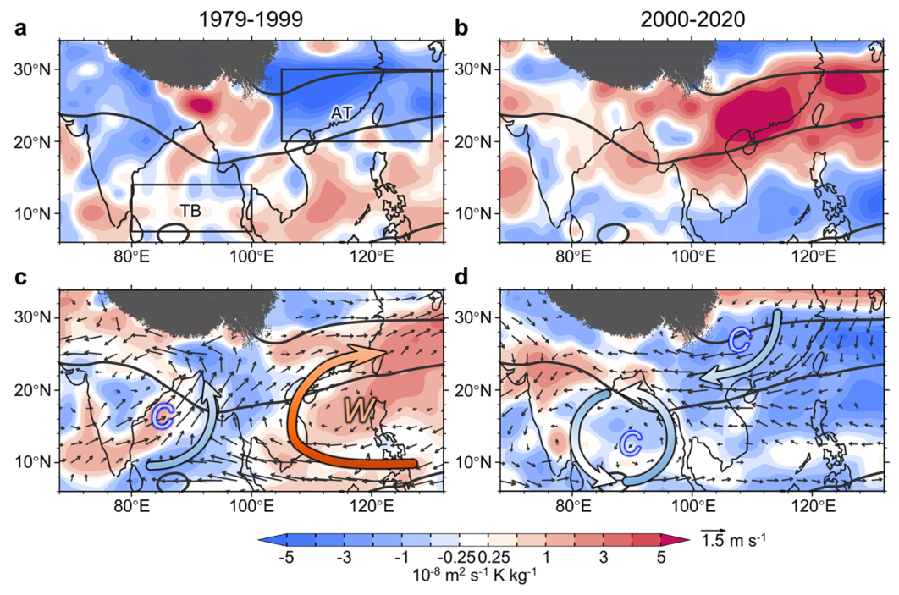
补充图 7. TPS 对 IBT 动力学影响的 MPV 诊断。
Supplementary Figure 7. MPV diagnosis of TPS impacts on IBT dynamics.
春季 700 hPa (a、b) MPV1 和 (c、d) MPV2 异常，分别为 (a、c) 1979–1999 年和 (b、d) 2000–2020 年，以高减低 TPS 年份之差表示。
Spring (a, b) MPV1 and (c, d) MPV2 anomalies at 700hP for (a, c) 1979-1999 and (b, d) 2000-2020, shown as the high minus low TPS year differences.
“C”/“W”：冷/暖平流。
“C”/“W”: Cold/warm advection.
黑色等值线：IBT 控制区（700 hPa 位势高度气候态：3030/3081.5 gpm）。
Black contours: IBT control zone (700 hPa geopotential height climatology: 3030/3081.5 gpm).
槽底区域：80°E–101°E，7.5°N–14°N；槽前区域：105°E–130°E，20°N–30°N。
Trough-base domain: 80°E-101°E, 7.5°N-14°N; Ahead of the trough area: 105°E-130°E, 20°N-30°N.
数据来源：ERA5 再分析数据集。
Data sources: ERA5 reanalysis datasets.
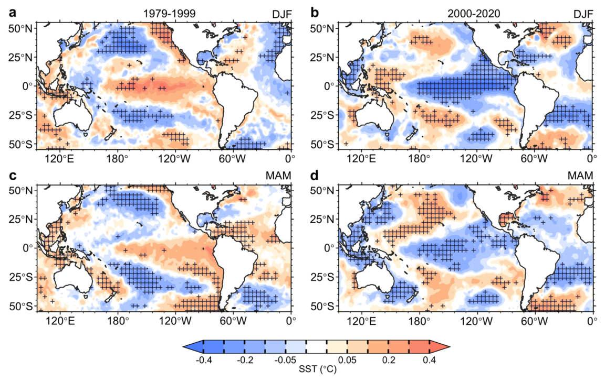
补充图 8. TPS 与前冬/同期海温的关系。
Supplementary Figure 8. Relationship between TPS and preceding/concurrent SST.
a、b 1979–1999 年和 2000–2020 年前冬（12–1–2 月）海表温度（SST）异常对 TPS 指数的回归。
a, b Preceding winter (December-January-February) sea surface temperature (SST) anomalies regressed onto TPS index for 1979-1999 and 2000-2020.
c、d 同 (a、b)，但为同期春季 SST 异常。
c, d As in (a, b), but for concurrent spring SST anomalies.
点状阴影表示通过 95% 置信水平的显著 SST 异常区域。
Stipple indicate regions with significant SST anomalies at 95% confidence level.
数据来源：英国气象局哈德莱中心观测资料。
Data sources: Met Office Hadley Center observations.
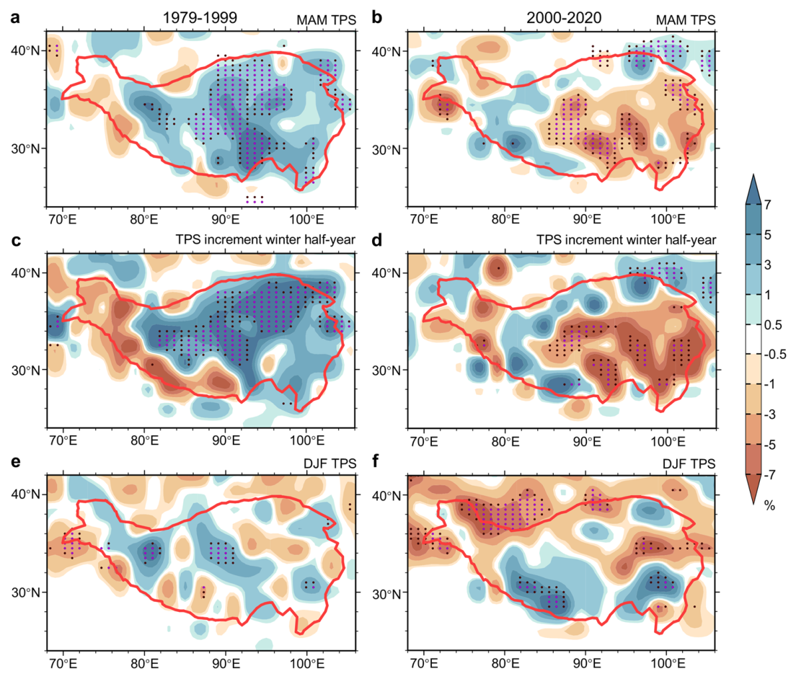
补充图 9. TPS–IBT 联系。
Supplementary Figure 9. TPS–IBT linkage.
a、b 1979–1999 年和 2000–2020 年春季 TPS 异常对 IBT 指数的回归。
a, b Spring TPS anomalies regressed onto IBT index for 1979-1999 and 2000-2020.
c、d 同 (a、b)，但为前一个冬半年积雪增量（TPS⁰|3月 − TPS⁻¹|9月）异常。
c, d As in (a, b), but for preceding winter half-year TPS increment (TPS0|March − TPS−1|September) anomalies.
e、f 同 (a、b)，但为前一个冬季（12–1–2 月）TPS。
e, f As in (a, b), but for preceding winter TPS (December-January-February).
黑/紫点表示通过 90%/95% 显著性检验的区域（双侧 t 检验）。
Black/purple dots indicate regions with statistical significance at the 90%/95% levels (two-sided t-test).
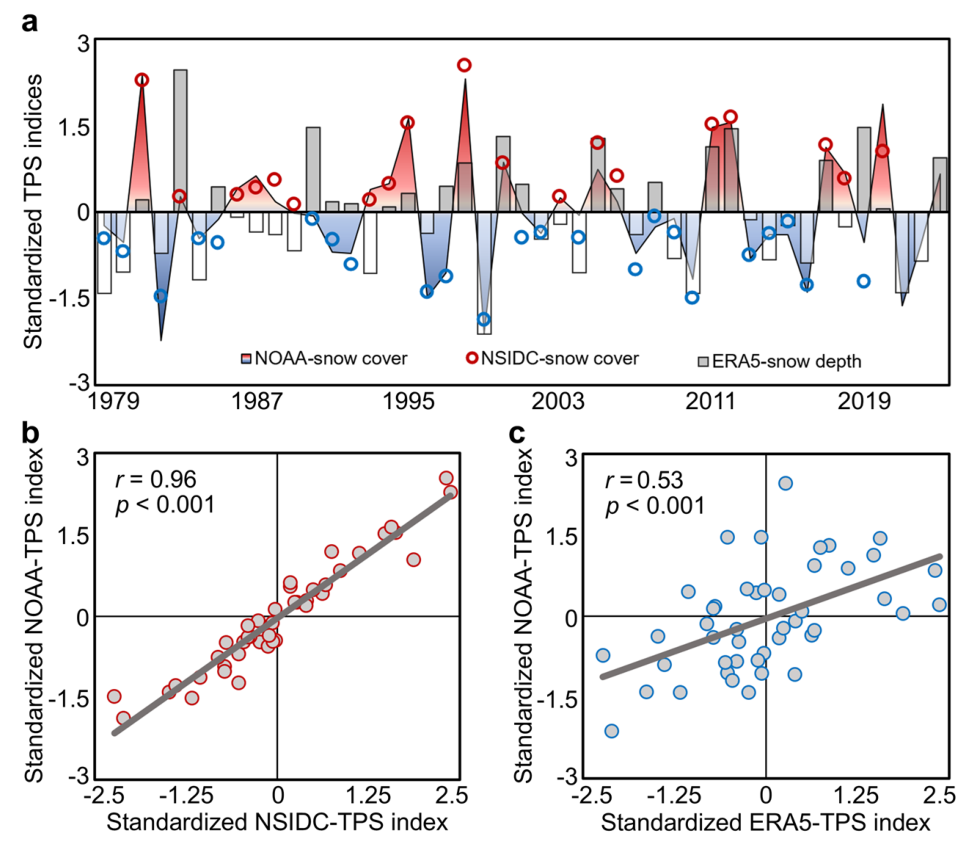
补充图 10. TPS 指数的多数据集可靠性评估。
Supplementary Figure 10. Multi-dataset reliability assessment of TPS index.
a 使用 NOAA/NSIDC 卫星积雪和 ERA5 模拟积雪深度数据的 TPS 指数（原文作“TPC indices”）的时间演变。
a Temporal evolution of TPC indices using NOAA/NSIDC satellite-derived snow cover and ERA5 modeled snow depth data.
b 显示基于 NOAA 与基于 NSIDC 的 TPS 指数之间关系的散点图。
b Scatter plot depicting the relationship between NOAA-based and NSIDC-based TPS indices.
c 比较基于 NOAA 与基于 ERA5 的 TPS 指数的散点图。
c Scatter plot comparing NOAA-based and ERA5-based TPS indices.
补充表 S1. 合成分析所用高、低 TPS 年份的选取。
Supplementary Table S1. Selection of high and low TPS years for composite analysis.
| 时段Period | 高 TPS 年份High TPS years | 低 TPS 年份Low TPS years |
|---|---|---|
| 1979–19991979-1999 | 1981 (2.37), 1987 (0.62), 1995 (1.62), 1998 (2.31)1981 (2.37), 1987 (0.62), 1995 (1.62), 1998 (2.31) | 1980 (−0.53), 1982 (−2.23), 1991 (−0.70), 1992 (−0.72), 1996 (−1.48), 1997 (−1.06), 1999 (−2.11)1980 (-0.53), 1982 (-2.23), 1991 (-0.70), 1992 (-0.72), 1996 (-1.48), 1997 (-1.06), 1999 (-2.11) |
| 2000–20202000-2020 | 2000 (0.86), 2005 (0.74), 2011 (1.47), 2012 (1.56), 2017 (1.12), 2018 (0.66), 2020 (1.87)2000 (0.86), 2005 (0.74), 2011 (1.47), 2012 (1.56), 2017 (1.12), 2018 (0.66), 2020 (1.87) | 2007 (−0.72), 2010 (−1.17), 2013 (−0.81), 2016 (−1.39), 2019 (−0.53)2007 (-0.72), 2010 (-1.17), 2013 (-0.81), 2016 (-1.39), 2019 (-0.53) |
注：当 TPS 指数超过 +0.5 个标准差时年份归类为高 TPS 年份，当 TPS 指数低于 −0.5 个标准差时选取为低 TPS 年份。
Note: High-TPS years are classified when TPS index exceeds +0.5 standard deviations, while low-TPS years are selected when TPS index falls below -0.5 standard deviations.
括号中的数值代表 TPS 的标准差。
The values in brackets represent the standard deviation of TPS.
补充表 S2. 使用 CESM-LE 的积雪扰动试验详情。
Supplementary Table S2. Details for snow perturbation experiments using CESM-LE.
| 试验名称Title | 缩写Abbreviation | 强迫场Forcing field | 积分时段Integral period |
|---|---|---|---|
| 正准跷跷板型 TPS 试验Positive quasi-seesaw TPS experiment | PosSSExpPosSSExp | 1979–1999 年合成正位相 TPS 异常Composite positive-phase TPS anomalies for 1979-1999 | 3–5 月 1979–1999March-May 1979-1999 |
| 负准跷跷板型 TPS 试验Negative quasi-seesaw TPS experiment | NegSSExpNegSSExp | 1979–1999 年合成负位相 TPS 异常Composite negative-phase TPS anomalies for 1979-1999 | |
| 正一致型 TPS 试验Positive coherent TPS experiment | PosCHRExpPosCHRExp | 2000–2020 年合成正位相 TPS 异常Composite positive-phase TPS anomalies for 2000-2020 | 3–5 月 2000–2020March-May 2000-2020 |
| 负一致型 TPS 试验Negative coherent TPS experiment | NegCHRExpNegCHRExp | 2000–2020 年合成负位相 TPS 异常Composite negative-phase TPS anomalies for 2000-2020 |
注：合成 TPS 异常分布型的详情见补充图 4。
Note: See composite TPS anomaly pattern details in Supplementary Fig. 4.
本研究中我们使用 NCAR 通用地球系统模式 1.2 版大集合（CESM-LEN）来实现该方案，利用其 45 个集合成员研究大气对 TPS 异常的响应。
Here, we implement this scheme using the NCAR Community Earth System Model version 1.2 Large Ensemble (CESM-LEN), employing its 45 ensemble members to investigate atmospheric responses to TPS anomalies.
CESM-LEN 配置在 2.5° × 1.875° 分辨率下将 CAM4（通用大气模式第 4 版）与 CLM4.5（通用陆面模式第 4.5 版）耦合，并包含海洋和海冰分量。
The CESM-LEN configuration couples CAM4 (the Community Atmosphere Model v4) with CLM4.5 (the Community Land Model v4.5) at 2.5° × 1.875° resolution, incorporating ocean and sea-ice components.
| 原文 | 译文 / 说明 |
|---|---|
| India-Burma trough (IBT) | 印缅槽（IBT） |
| Tibetan Plateau snow cover (TPS) | 青藏高原积雪（TPS） |
| Pacific Decadal Oscillation (PDO) | 太平洋年代际振荡（PDO） |
| moist potential vorticity (MPV); MPV1 / MPV2 | 湿位涡（MPV）；其垂直分量 MPV1（诊断对流稳定/不稳定）、水平分量 MPV2（诊断暖/冷平流） |
| trough base / trough line / trough axis | 槽底 / 槽线 / 槽轴 |
| quasi-seesaw TPS pattern | 准跷跷板型（高原积雪）分布型：高原中东部偏多、西部偏少 |
| coherent TPS pattern | 一致型（高原积雪）分布型：整个高原一致偏多 |
| potential vorticity generation / dissipation | 位涡制造 / 位涡耗散 |
| regime shift | 年代际转型（体制转变）；本文指 2000 年前后相关关系的符号反转 |
| snow increment (winter half-year) | （冬半年）积雪增量，即春季积雪减去前一年秋季积雪（TPS⁰|3月 − TPS⁻¹|9月） |
| trough-ahead / downstream sector | 槽前 / 下游区域 |
| “Asian Water Tower” | “亚洲水塔” |
| spring predictability barrier | 春季可预报性障碍（ENSO 春季预报技巧骤降现象） |
| Yunan | 云南（原文 “Yunan (a province in China)” 即云南的拼写） |
| Indochina Peninsula | 中南半岛 |
| gpm | 位势米（geopotential meter），位势高度的单位 |
| PVU | 位涡单位（1 PVU = 10⁻⁶ m² s⁻¹ K kg⁻¹） |
| CESM-LEN | NCAR 通用地球系统模式 1.2 版大集合（CESM Large Ensemble） |
| PosSSExp / NegSSExp | 正/负准跷跷板型 TPS 试验（SS = quasi-seesaw） |
| PosCHRExp / NegCHRExp | 正/负一致型 TPS 试验（CHR = coherent） |